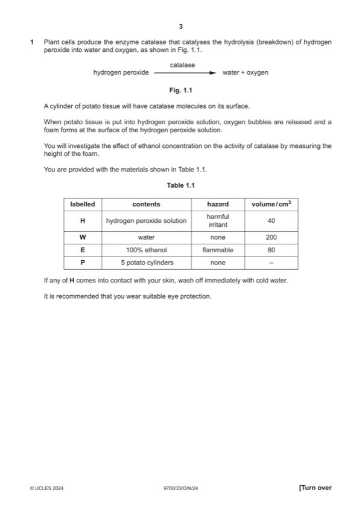

Question 1

Original paper page 3
Part 1(a)(i) — solution
measuring the height of the foam; 1
Mark points
- Include the ideas shown in the solution above.
Part 1(a)(ii) — solution
1 states 50%, 25%, 12.5% ; 3
Mark points
- Include the ideas shown in the solution above.
Part 1(a)(iii) — solution
1 heading for independent variable: % concentration of ethanol ; 5
Mark points
- Include the ideas shown in the solution above.
Part 1(a)(iv) — solution
shows how both rates are calculated and units for both rates included ; 1
Mark points
- Include the ideas shown in the solution above.
Part 1(a)(v) — solution
states how the rate changes with time for results collected ; 1
Mark points
- Include the ideas shown in the solution above.
Part 1(a)(vi) — solution
shows the activity of catalase without ethanol ; 1
Mark points
- Include the ideas shown in the solution above.
Part 1(a)(vii) — solution
height of the foam ; 1
Mark points
- Include the ideas shown in the solution above.
Part 1(a)(viii) — solution
any two from: 2
Mark points
- Include the ideas shown in the solution above.
Part 1(b)(i) — solution
1 x–axis: labelled ‘concentration of ethanol / ldm–3 and 4
y-axis: labelled ‘PPO activity arbitrary units / au’ ;
Mark points
- Include the ideas shown in the solution above.
Part 1(b)(ii) — solution
any two from: 2
Mark points
- Include the ideas shown in the solution above.
Part 1 — solution
as concentration of ethanol increases PPO activity decreases ;
Mark points
- Include the ideas shown in the solution above.